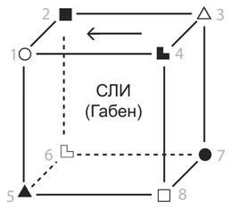

Андрей Борцов (Warrax)
К вопросу об учете
роли интеллекта и психического развития в соционике
Тезисы статьи были представлены в виде доклада на V конференции НСО «Соционика.
Границы применимости и методы исследования» (11-12 апреля 2009 г).
|
Человек создан для счастья, как птица для бульона. |
Читая материалы по соционике, редко можно наткнуться на упоминание того, что выходит за рамки соционической модели. С одной стороны, это логично — речь-то идет именно о соционике. Но с другой стороны, соционика является de facto частью психологии, а психика холистична. Соответственно, практическая работа включает в себя не только соционику, но и психологические моменты (о чем благополучно забывает значительная часть социоников).
Понятно, что психологические (и тем более психиатрические) проблемы будут накладывать свой отпечаток на ИМ, но патологические случаи не имеет смысла смешивать с нормальной работой психики. Отдельные функции могут быть у конкретного индивида подавлены или же наоборот — может иметь место акцент, не говоря уже о полноценных масках, но такой дисбаланс остается в рамках соционики.
Я же хочу обратить внимание на то, что обязательно надо учитывать при любой работе с психикой, включая соционический подход. А именно — уровень развития индивида, интеллектуальный и личностный. Многие психологи и соционики придерживаются гуманистических взглядов, что вредит их профессиональной деятельности: ученый должен изучать объекты и связи между ними, и не более того. Личное отношение к объекту исследования мешает чистоте эксперимента.
В частности, гуманисты исходят из пресуппозиции «все люди равны», что вкупе с тем, что соционическая модель независима от степени развития индивида, приводит к осложнениям на практике: одинаковая суть может быть выражена через разные формы.
Всем известное явление «соционического шовинизма», когда индивид считает, что надо использовать только сильные функции, а активности слабых — избегать, обусловлено низким уровнем развития. Развитый индивид будет стремиться использовать свои слабые функции — он понимает, что без них психика не будет гармоничной, а неразвитый с радостью примет стратегию «тут не я виноват, а ТИМ» с понятными последствиями.
Прежде чем начать разговор о специфике соционических проявлений в зависимости от уровня развития человека, необходимо привести дефиниции используемых терминов. К сожалению, вынужден констатировать факт: сколь-либо конвенциальных определений терминов «интеллект» и «развитость психики» не существует. Причины понятны: во-первых, приходится давать определение «изнутри черного ящика», во-вторых, исследования на эти темы считаются неполиткорректными.
Не буду тратить место в журнале на изощрения номинализма, и дам не строгие, а остенсивные определения из моих старых статей (соответственно, подробнее соответствующую трактовку терминов можно уяснить их этих статей).
Интеллект определяется [1] как способность решать задачи. Под задачей понимается требование решения произвольной проблемной ситуации, включающее сбор информации, ее оценку, процесс принятия решения и конечное практическое действие (окончательное решение). Понятие «решать» подразумевает нахождение решения, верного в некотором приближении, которое устраняет проблемную ситуацию полностью либо частично (приемлемую ее часть), постоянно или временно (на приемлемый срок, требуемый согласно условиям решения проблемы).
Для обсуждаемой темы важно то, что интеллект имеет смысл разделить на следующие уровни:
0. Объект способен применять известные решения известных классов задач. Объект не изменяется и не способен совершенствоваться.
1. Объект способен применять известные решения известных классов задач. Объект способен совершенствоваться эволюционным путем, улучшая соотношения частот применяемых решений и/или уменьшая стоимость их получения.
2. Объект способен совершенствоваться революционным путем — может находить новые решения известных классов задач.
3. Объект способен совершенствоваться революционным путем — может находить (создавать) решения для ранее неизвестных классов задач.
Подавляющее большинство людей имеют интеллект уровня 0. Это не удивительно: школьное образование и даже высшее большей частью направлено на зубрежку и не более того (а уж сейчас, с введением ЕГЭ…). Уровень 1 — это достаточно развитый индивид. Если вы удивляетесь «какое тут развитие, это всякий должен», то напоминаю, что по себе людей не судят. Охотно верю, что большинство читателей этой статьи имеют уровень развития выше среднего, но попробуйте вспомнить (или начните подмечать), какое количество поступков совершается окружающими по причине «все так делают», «как же иначе» и т.п. Уровень 2-3 — высокий уровень интеллекта (условно и навскидку IQ > 130), причем вкупе с высокой креативностью.
В статье я буду называть уровень 0 низким, уровень 1 средним, а 2-3 — высоким.
С развитием психики все еще сложнее, хотя бы потому, что очень часто смешивают личность и индивидуальность. Хотя о том, что личность не равна индивиду, писал еще А.Н.Леонтьев.
Я определяю личность [2] как эволюционно-прогрессивную форму существования субъективного разума, характеризующуюся наличием осознанно сформированного мировоззрения (системы внутренних принципов), а также развитием интеллекта и воли, достаточным для того, чтобы этими принципами руководствоваться.
Важно: личность можно выработать в себе только самостоятельно, тщательно прорабатывая психику; при этом любая личность уникальна, хотя вполне может иметь общие черты с другими личностями.
Высший уровень развития психики — это наличие личности. Большинство же людей личностью не обладают (не имеют системы внутренних принципов), их мировоззрение заимствовано и шаблонно, либо отсутствует — так как мировоззрение является системой, а не эклектичным набором постулатов. Всем известный пример: какое отношение к православию имеет исполнение языческих обрядов на могилах предков в иудейский праздник Пейсах?
Для обсуждаемой темы не важно, строго к интеллекту или психике имеет отношение уровень развития (то, что один вычисляет, другая может чувствовать), важны лишь условно-суммарные градации (понимаю, что это не строго научно, но вполне достаточно для практических целей):
низкий уровень развития — индивид мыслит шаблонно и при этом не представляет, что может быть как-то иначе, мотивации не осознаются, de facto мальтузианские [3] и не более того;
средний уровень развития — мыслит шаблонно, но при этом понимает, что надо как-то развиваться, и даже предпринимает попытки в меру своего недоразвития, любит «поговорить на умные темы» и т.п[4], мотивации не осознаются;
высокий уровень развития — индивид мыслит независимо от шаблонов, развитие для него является естественной потребностью, личность развита в достаточной степени, чтобы поступки «проверялись на соответствие», мотивации осознаются по большей части.
Для примера я решил взять дуальные отношения: слишком уж распространен миф об их идеальности. При этом случай «интеллект и развитие у супругов разные» признается за фактор, усложняющий взаимодействие: «разница в интеллектуальных уровнях. Не каждый может пойти тем путем, каким в своей личной жизни пошли Ж.-Ж. Руссо и В. Гете, чтобы обеспечить себя дополняющими психиками женщин из низшего сословия. Оба жили несколько вне общества или — «выше общества», в условиях, позволявших полностью отгородить семейную жизнь от света, в котором они жили и работали сами.
Принято говорить, что обыкновенным людям жить легче, чем незаурядным. В этом, по-видимому, есть некоторый смысл, так как первых больше и, само собой, в окружении большее число интеллектуально подходящих, дополняющих дуальных психик» [5].
Но если уровни развития совпадают, то постулируется полнейшее взаимопонимание. «Как люди с дополняющими дуальными психиками воспринимают друг друга? Как партнера, который всегда знает, что и когда нужно делать, понимает, умеет поддержать, защитить, никогда не обижает и, что еще важнее, не обижается. … Источником раздраженности и конфликтов между людьми в работе бывает столкновение в проявлении инициативы или неумение одного подхватить и поддержать инициативу другого. У дуалов такие конфликты невозможны» (ibid).
Но так ли это?
Давайте рассмотрим взаимодействие дуальной пары Габен-Гексли разных уровней развития, причем именно с соционической точки зрения.
В браке, как и при любых других близких отношениях, очень важно понимание и поддержка. Для удобства я свел тезисы в таблицу, но, думаю, требуется пояснение.
| Уровень развития пары | Степень понимания | Поддержка понимается как |
| Низкий (обыватель) | Не требуется | Не мешаться |
| Средний (с претензиями) | Требуется поверхностное, по форме | Формальное поддакивание |
| Высокий (интеллектуал) | Требуется глубокое, по сути | Обсуждение по сути, аргументированная критика, развитие идеи |
При низком уровне развития понимания между партнерами не требуется. Имеется в виду, конечно, настоящее понимание — чем другой человек живет, какие у него мотивации и т.д. Требуется лишь выполнение социальных ролей, следование штампам. Скажем, женщина должна готовить еду — штамп, который должен выполняться, даже если мужчина сенсорик, а женщина интуит. Каких-либо развитых интересов не существует, даже их общность не особо важна — женщина может смотреть мыльные сериалы, мужчина — футбол, и никому в голову не придет, что можно посмотреть что-то иное, интересное обоим, и к тому же развивающее (утрирую, но не особо). Поддержка здесь также «штампована»: социально-гендерные роли расписаны, и, если они выполняются, все замечательно, специальной поддержки не требуется в принципе.
При среднем уровне развития уже появляется потребность «поговорить об умном», и тут требуется поддержка поддакиванием: декларируемая позиция поверхностна, отстаиваться аргументированно не может, но хочется, чтобы ее разделяли. Мол, если с имярек согласны, значит, у него правильная позиция (а споры вызывают раздражение из-за неумения обосновывать свою точку зрения).
И лишь на высоком уровне развития требуется именно понимание: не формальное согласие, а именно понимание всей позиции (даже если она не разделяется), и поддержка осуществляется именно сотрудничеством.
Примечание: в рассуждениях я по умолчанию подразумеваю, что Габен — мужчина, а Гексли — женщина. Поправки, если это требуется, легко сделать самостоятельно. В пометках «какая функция с какой взаимодействует» слева — Габен, справа — Гексли.
Итак, низкий уровень развития.
|  |
 |
Рассмотрим возможные взаимодействия функций.
1 ↔ 5: Габен что-либо делает по своей базе, Гексли оценивает результаты шаблонно, методом «сравнить с соседями». Оба довольны: Габен мастеровит выше среднего, Гексли же по суггестивной не нарадуется.
Впрочем, далеко не обязательно все будет идеальным. Потому что Гечка, в частности, не умеет готовить (по крайней мере — вкусно и при этом разнообразно). Так что все вышеописанное верно для любого соотношения полов.
Если будет наоборот, Габенка и Гек — могут быть серьезные сложности, социальная и соционическая роль не совпадают. Зато в этом случае Габенка будет хорошо исполнять свою социальную роль — готовить, обустраивать дом. С последним она иногда не сумеет справиться самостоятельно, но тут она запросто сможет брать мужа за референтную и пользоваться им как отличным подсобным рабочим. И социальные роли тут вполне будут соблюдены: достаточно вспомнить анекдоты, в которых жене зачастую «положено» инициировать и контролировать хозяйственные работы и т.д. (самый хрестоматийный случай — навязчивые советы мужу на тему «как вести машину»; только обычно герои анекдотов воспринимают это в штыки, а Гек примет советы с благодарностью). Так что конфликт тут может возникнуть, а может и не возникнуть. Пожалуй, все зависит от подсознательного психического настроя обоих супругов: если они измучены и недовольны жизнью, им захочется «качнуть маятник» в сторону скандалов; если же у них все в порядке — реакция на замеченные несоответствия ограничится умиленными улыбочками вида «ах, он(а) у меня такой(ая)...». Т.е. по этим функциям взаимодействие не критично и самостоятельной причиной для возникновения конфликтов быть не может.
5 ↔ 1: В этом взаимодействии Габен внушается по суггестивной идеями Гексли, при этом на низком уровне развития идеи генерятся опять же шаблонные, согласно социальным ролям, что и ожидается, и конфликту взяться неоткуда.
2 ↔ 6: Также никаких сложностей в варианте Габ/Гечка: социальные роли соответствуют шаблону «мужчина — глава семьи, говорит, что делать, женщина должна подчиняться». С творческой на референтную — легко и естественно. А вот если наоборот, Габенка/Гек — то вполне может реализоваться вариант «подкаблучник», либо «безвластие», которое тоже ни к чему хорошему не приведет — оба ТИМа аристократические, и «кто в чем главнее» должно быть определено.
В принципе, социальные роли могут нормально отыгрываться и в описанных условиях. Муж может придерживаться позиции «мне несложно потакать этим глупым женским капризам насчет того, как что должно быть сделано», и это не будет подкаблучничеством. Правда, для этого муж должен иметь основания уважать себя за достижения в других областях. В случае с низким уровнем развития это бывает редко.
6 ↔ 2: Габен хотел бы по референтной научиться отношениям, но Гексли здесь не может реализовать потенциал творческой: мышление происходит шаблонами, и «творчество» заключается лишь в их смене из ограниченного набора. Внутри пары к конфликту это не приводит — оба отыгрывают социальные роли, но при этом у Габена . не развивается в принципе (как и 0 у Гексли)
3 ↔ 7: В привычной обстановке ролевая функция проявляется редко, так что здесь Гексли косвенно управляет Габеном, напоминая, чтобы тот иногда слезал с дивана™.
7 ↔ 3: Аналогично 2 « 6 — соответствует общепринятым социально-гендерным ролям и с большой вероятностью приводит к проблемам в случае пары Габенка/Гек.
4 ↔ 8: Классический пример приятности дуальных отношений: болевую с демонстрационной задеть сложно, а эмоции у Гексли адекватные (Габены не любят неадекватные эмоции даже больше, чем сильные). Сложности могут начаться, если ситуация «застрянет» — поскольку отношения строятся по шаблонам, а шаблон «устроить семейный скандал» вполне существует, то конфликт пойдет в резонанс: Габен будет объяснять, затрагивая болевую 0 Гексли, причем неадекватно (если имярек логик, это еще не значит, что владеет логикой и тем более может что-либо разумно объяснить; на низком уровне развития «аргументы» вида ad verecundiam, circulus in demonstrando, post hoc ergo propter hoc [6] и др. встречаются на каждом шагу, не говоря уж о том, что контрарность от контрадикторности [7] не отличают в принципе).
8 ↔ : Не затрагивается болевая у Гексли. Но давайте подумаем, а почему она не задевается? Ведь если Габен начнет объяснять, то это автоматом пойдет именно по структурной логике. Следовательно, стандартное разрешение ситуации подразумевает в этом случае не объяснение «почему так», а распоряжение «делать так», по деловой логике, которой референтная функция Гексли всегда рада поучиться.
«…настоящего понимания в такой паре изначально не существует: функции, которые соответствуют блоку Эго партнера, у второго партнера слабы, что означает невозможность воспринять сразу большой объем информации, и с трудом осознаваемы, что дает не понимание, а в подавляющем большинстве случаев почти некритичное принятие информации, выдаваемой партнером» — Ефим Кривошеев [8].
Именно так: при низком уровне развития нет обсуждения, а есть лишь некритичное принятие на веру.
Таким образом, при низком уровне развития дуальные отношения действительно благоприятны, но исключительно по причине «сложнее нечаянно задеть дуала, чем другой ТИМ». Ситуация, как в песне Высоцкого «Тут за день так накувыркаешься, придешь домой — там ты сидишь!» не реализуется, приходит имярек домой — а там партнер не раздражает. Вот и вся дуализация.
Nota bene: собственно говоря, при таком уровне развития дуализации как процесса и не происходит. Партнер не в состоянии научить своим сильным функциям, так как сам действует по ним шаблонно.
А теперь посмотрим высокий уровень развития.
1 ↔ 5: Здесь не просто положительные эмоции по суггестивной от действий Габена, но Гексли еще и потихоньку обучается действиям по сенсорике ощущений.
Важно: при высоком уровне развития индивид способен проработать до уровня выше среднего не только сильные, но даже и слабые бессознательные функции. Упрощенно говоря, для примера: интуит — это не тот, у кого очень хорошо развита интуиция и очень плохо сенсорика, а тот, у кого интуиция развита лучше, чем сенсорика. При этом у неразвитого может быть интуиция развита хуже среднего, а у развитого — и сенсорика выше среднего (интуиция тогда будет развита еще сильнее).
5 ↔ 1: Габен стремится реализовать идеи, выдвигаемые Гексли, при этом идеи адекватны, а не просто «в голову стукнуло». Гексли же помогает развить идеи, возникающие у Габена. Обратите внимание: имеет место не часто декларируемое «дуал берет на себя то, что не получается у другого», а «дуал помогает развить слабые функции». Помощь в развитии, а не «костыли».
Именно тут начинается реальное взаимодействие. В ситуации «партнер с сильными функциями ведет, партнер со слабыми функциями подчиняется» совместной работы как таковой нет: каждый действует в отдельности, в то время как второй партнер бездействует. А если человек не боится затрагивать слабые функции, то он остается включенным в работу в областях, где в основном используются данные функции. В таком случае он, во-первых, может помочь дуалу наивным вопросом (иногда неуверенность в некоей области способна отследить то, что не замечает уверенность), а во-вторых — все время прикрывает слабые функции партнера (второстепенные для данной ситуации), таким образом делая совместную работу куда более эффективной.
2 ↔ 6: Габен дает рекомендации, что делать, не шаблонные, а действительно по своей творческой, исходя из текущей ситуации. Гексли обучается. Забегая вперед, отмечу, что обучение «что делать» невозможно без «зачем делать именно так» — да, по структурной логике.
6 ↔ 2: Идет научение Габена. Референтная функция «заполняется» еще в раннем детстве, особенно если это касается этики отношений — «как с кем общаться». В дальнейшем ее приходится не просто развивать, но и тщательно очищать от привитых шаблонов. Понятно, что это возможно лишь на высоком уровне развития, когда есть навыки работы с бессознательным.
Замечу как Габен: навык Гексли почувствовать отношения, когда самому приходится их вычислять, восхищает, однако интуиты любят пропускать «лишние» факты; а вот если взаимодействовать, объединяя интуицию и логику, результат получается замечательный. Это как раз к вопросу о том, что иногда слабая функция (при посредстве иных, нестандартных для данной ситуации функций) улавливает то, чего не может сильная.
3 ↔ 7: Гексли существенно помогает Габену управляться со временем. Причем очень аккуратно. Идеальное взаимодействие — это когда Габен сам просит что-то напомнить и сподвигнуть на «сделать вовремя», а Гексли ненавязчиво это напоминает. Тогда взаимодействие идет именно по интуиции времени (см. далее другой вариант).
7 ↔ 3: Габен редко включает ограничительную, понимая, что это слишком сильное воздействие, причем на высоком уровне развития понятно, что «молчи, женщина, я сказал!» — это не лучший способ взаимопонимания. А вот Гексли вполне может порезвиться, прорабатывая блок супер-эго: по мелочам Габен на + реагировать не будет.
4 ↔ 8: Стандартная поддержка вида «сделаешь что-то, этому радуются, и от этого самому приятно» происходит адекватно, так как эмоционально оценивается именно то, что Габен делает, при понимании, зачем делает, а не просто «Гексли радуется чему-то своему, что Габену безразлично». Вообще, отличительная черта отношений на высоком уровне развития — понимание партнера. Соответственно, у Габена исчезает опасение проявления эмоций. Что, понятно, весьма полезно: к чему приводит подавление эмоций, объяснит любой психолог.
8 ↔ 4: Самое интересное. Высокий уровень развития подразумевает осознанность поступков, ergo — без структурной логики никуда. Если Гексли может адекватно действовать на интуиции, то при любом обсуждении неизбежно будут возникать темы «как что устроено», «на каком основании именно так» etc. Так вот: на этом уровне развития Габен способен адекватно объяснить, так, чтобы Гексли было понятно, но главное — то, что Гексли, понимая объяснения, по мере наработки фактов/методов развивает свою системную логику. Если болевую постоянно не оценивать, а поддерживать доброжелательными оценками, то она очень даже эффективно работает, вполне творчески. Гексли, даже при высоком уровне интеллектуального развития, сложно делать выкладки «строго логично по полочкам», расписывая силлогизмы, но при этом «на подкорке» логика работает вполне адекватно. Честно говоря, куда адекватнее, чем у неразвитых логиков (см. выше), так как Гексли понимает, что легко может ошибиться в логике, и высказывается по теме очень осторожно, неразвитые же логики считают, что мыслят логично, и поэтому легко скатываются в демагогию.
Итак, при высоком уровне развития идет настоящая дуализация — взаимное развитие дуалов, а не «поддержка костылями». Особенно важно развитие 4-й функции, иначе у Габена будут проблемы психологического характера из-за вытеснения эмоций, а структурная логика необходима Гексли для адекватного взаимодействия с современным миром.
И напоследок — средний уровень развития.
Как понимаете, самый распространенный. И при этом — самый неблагоприятный. По причине, что в этом случае уже хочется взаимодействия, аналогичного высокому уровню развития (конечно, в меру понимания), но способностей к этому еще нет. При общении используются шаблоны, пусть и не такие примитивные, как при низком уровне развития, и более разнообразные.
Давайте проанализируем подробнее.
1 ↔ 5: В основном взаимодействие идет аналогично низкому уровню развития, но оценка по критерию «как положено» будет вестись не сравнением с подругами/соседями, а с телевизором и журналами. Габен будет стараться сделать поудобнее, но легко может нарваться на критику со стороны Гексли (утрированно говоря) «а почему не розовое и не со стразиками?», «зачем делать, когда надо купить новое и модное» и т.п. Габен тут будет поступать согласно своей сенсорике, которая на среднем уровне развита уже выше среднестатистического в популяции, и он прекрасно понимает, что удобнее, комфортнее и т.д. У Гексли же сенсорика ощущений еще не развита (это уже высокий уровень развития), и поэтому внушаться будет только бессознательно. На примере: Габен купит удобный диван, а Гексли не сможет понять, что диван удобный — да, когда сидишь, вроде бы все хорошо, но если встать и посмотреть — то есть мебель и помоднее…
А если Гексли поступит стандартным для данного уровня развития образом — попытается развить слабую сенсорику не самостоятельно, а путем присоединения к некоей «системе» (псевдовосточная секта, клуб любителей уринотерапии, веганы)? Весело будет всем: и Габену («а-а-а, ты вообще чего?!»), и Гексли («эта зараза выступает против моей драгоценной Системы, причем выступает так грамотно, что реально вселяет в меня какие-то сомнения, сволочь!»).
5 ↔ 1: Если при низком уровне идеи шаблонны, то на среднем уже могут возникать и нестандартные идеи. Проблема в том, что они будут слишком сырыми и оторванными от реальности, а Габену уже хочется их реализовать (средний уровень подразумевает понимание сотрудничества и поддержки). И тут возможны варианты, причем все негативные. Во-первых, Габен может суггестироваться идеей настолько, что воспримет ее некритично (суггестивная функция мало того, что слабенькая, так еще и работает как триггер: либо одобряет целиком, либо отвергает, и, чтобы это исправить, требуется высокий уровень развития), и будет пытаться реализовать непригодную к реализации идею. Во-вторых, Гексли генерит идеи «на ходу», и Габен может начать реализовывать какую-то проходную идею, а важную с т.з. Гексли и не заметит — оценки-то с разных точек зрения, а понимания, что перед началом действий надо все обсудить подробно, нет. В-третьих, Габен — очень вероятно — начнет уточнять и разрабатывать идею, в результате на Гексли обрушится системная логика. А с учетом того, что развития не хватает ни на объяснить, ни на понять…
2 ↔ 6: Опять же, Эго в данном случае достаточно развито, чтобы деловая логика действовала не примитивно-шаблонно, и в нестандартных ситуациях возможны нестандартные решения. Но у Гексли уже нет слепого подчинения «верю, а понимать не обязательно», как при низком уровне, но нет и понимания, как при высоком. В результате будет работать референтная, заполненная шаблонами «как надо». Вот и представьте, что получится, если нестандартное понимание Габена столкнется с шаблонным Гексли, причем Габен будет пытаться объяснить (по болевой 0 Гексли), а Гексли будет нервничать «да как же так можно!», но адекватные эмоции тут будут именно сильные и фонтаном (и будут бить по болевой E Габена).
6 ↔ 2: Основной вариант тот же, что и при низком уровне: действуют по шаблонам, принимая правила игры. Совсем грустный вариант — «почитать популярную психологию». Или «соционику для чайников за пять минут»…
3 ↔ 7: Гексли старается контролировать время, т.к. видит, что Габену с этим сложно. В результате Габен сидит на ролевой, а Гексли — на ограничительной (сравните с вариантом высокого уровня), последствия понятны. Причем действие идет, что характерно, не ненавязчиво по интуиции времени, а по волевой сенсорике: «напоминаю, пора!». Или даже по интуиции времени, но резко, именно «заход с ограничительной». Это, во-первых, неэффективно, так как волевая сенсорика у Габена заведомо сильнее, а во-вторых, вызывает негатив и отказ от действия — мол, ага, понял, как только, так сразу… Обобщенно: пойдут бодания 7 « 3 с обоих сторон. А, поскольку средний уровень развития предполагает желание разобраться, в чем причина возникшего конфликта, подключится системная логика, а вслед за ней — возврат по этике эмоций. Результат понятен.
7 ↔ 3: Габен здесь уже не считает, что «в лоб» — это лучший метод для сдерживания/ограничения, но при этом и не способен «дать порезвиться» Гексли по волевой сенсорике. А молча подчиняться «потому что мужчина сказал» Гексли уже не будет, и как раз может «зайти с ролевой». Габен передавит, но удовольствия это никому не принесет (плюс см. выше на тему «попытаться разобраться»).
4 ↔ 8: Как выше описывалось — если возникает конфликт, то он входит в резонанс: Габен старается доказать, Гексли это нервирует, Габен пытается объяснить, что нервничать незачем потому-то и потому-то, Гексли пытается понять и истерит от непонимания обрушивающейся структурной логики, а затем взрывается Габен…
8 ↔ 4: Габен пытается объяснить в меру своего понимания. При этом понимания не хватает. Гексли в это время сидит на болевой. Габен же, сталкиваясь с «все понимаю, объяснить не могу, а с меня доказательств требуют» нервничает — и тоже на болевую…
Итак, средний уровень развития — самый конфликтный. Очень важно то, что есть потребность разобраться в конфликтной ситуации, согласовать действия, обсудить вместе что-либо важное/интересное и т.д. но в этих случаях неизбежно происходит давление на болевую Гексли, а затем — очень часто — и на болевую Габена, с вхождением в резонанс.
В заключение отмечу, что затронутый вопрос роли психического и интеллектуального развития важен не только в использованном примере, и не только в ТИМных отношениях. Например, важную роль он играет для признака Рейнина аристократия/демократия: индивид низкого уровня развития будет брать готовые иерархии группы, развитый же будет судить по своим личным критериям. Проявления уступчивости/упрямости также сильно зависят от уровня развития. С одной стороны, развитый упрямый индивид может уступить, исходя из принципа «нечего с дураками спорить» (а еще чаще — попросту прервет общение, что большинством находящихся на низком уровне развития и значительной частью «средних» воспринимается как проигрыш, т.н. «слив»). С другой стороны, даже уступчивый этик с развитым интеллектом куда менее склонен соглашаться с явными глупостями, «лишь бы человека не обидеть».
Отдельного исследования заслуживает вопрос влияния интеллекта на ответы в соционических тестах — вопросы часто сформулированы так, что интеллектуальное большинство отвечает вовсе не так, как надо бы ответить, исходя ровно из того, что спрашивается, и с учетом уровня развития.
Мой любимый пример из какого-то теста на вертность (возможно, не соционического, здесь не имеет значения). Вопрос: «Вы входите в купе поезда к незнакомым попутчикам; легко ли вам начать с ними разговор?». Подразумевается, что интроверту сложно, а экстраверту легко. Но мне лично, ярко выраженному интроверту, это не составит труда — уровень развития позволяет, «интровертная стеснительность» не выражена. Но, знаете ли, мне это не нужно — нет потребности. Я лучше книгу почитаю, плеер послушаю и пиво потихоньку попью. Наглядно, не так ли? Подразумевается не то, что спрашивается в вопросе, причем при низком и среднем уровне развития с гораздо большей вероятностью воспримется то, что подразумевалось, и тест статистически будет работать нормально, но давать ошибку для развитых индивидов.
03-04/05/2009
Опубликовано: Журнал Научного соционического общества, №1(5) 2009, стр.54-58
1.Warrax. Интеллект: наличие, прогнозирование, тестирование. — Рукопись. // http://warrax.net/Satan/own/iq/cover.htm
2.Warrax. Теории личности. — Рукопись. // http://warrax.net/89/pers.html
3 В смысле «требующиеся для физиологического выживания», низший уровень пирамиды Маслоу. — здесь и далее примечания редактора.
4 Очень метко про таких людей выразился Никола Шамфор: «Однажды Мопертюн, развалившись в кресле и позевывая, сказал: “С каким удовольствием я занялся бы сейчас решением красивой и не очень трудной задачи!” В этих словах — весь человек».
5. Аугустинавичуте А. Соционика. — М.: Черная белка, 2008.
6 Ссылка на авторитет (вместо доказательства), рекурсивная ссылка , «после того — значит, вследствие того» — типичные приемы демагогии.
7 Контрарность — логическое отношение между двумя простыми сравнимыми суждениями, которые не могут быть одновременно истинными, но могут быть одновременно ложными; контрадикторность — логическое отношение между двумя простыми сравнимыми суждениями, которые не могут быть одновременно истинными и не могут быть одновременно ложными: истинность одного из них с необходимостью означает ложность другого, и наоборот.
8.Кривошеев Е. Соционика глазами психолога. — М.: Черная белка, 2005.